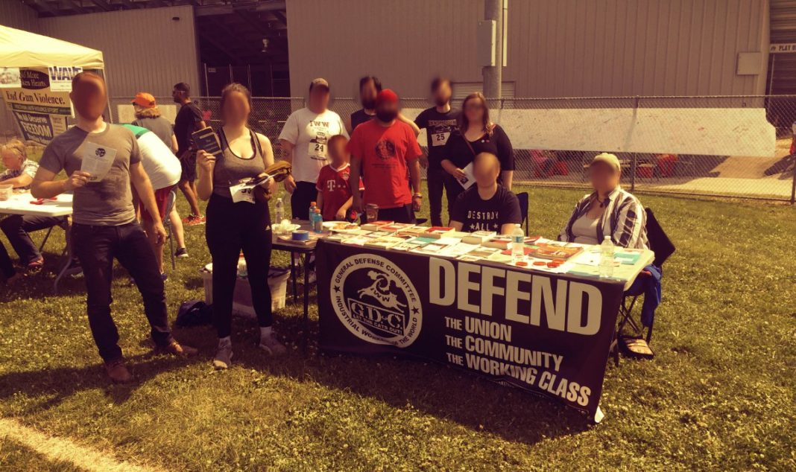

Submitted on Fri, 08/25/2017 - 7:14pm
By Milwaukee IWW, General Defense Committee (GDC) - It's Going Down, August 15, 2017
On August 5th a 6k run was held in remembrance of the attack on the Sikh Temple of Wisconsin in Oak Creek. Six victims were killed on August 5th 2012, Paramjit Kaur, Satwant Singh Kaleka, Prakash Singh, Sita Singh, Ranjit Singh, and Suveg Singh. The shooter was a neo-Nazi named Wade Michael Page living in Cudahy, south of Milwaukee. He was a member of the Hammerskins, a notorious Neo-Nazi Skinhead Gang.
Every August 5th the community remembers those lost. The event focused on a spirit of resilience in the face of tragedy. A dozen members of the IWW joined our fellow worker Jesse, who worships at the temple, to promote the General Defense Committee (GDC) and stand in solidarity with the Sikh community. We participated in the run, tabled with literature, and handed out around 250 fliers.
Text from Outreach Flyer by Jesse:
On the Morning of August 5, 2012, I was getting ready for work like I did every other Sunday. For some strange reason, I decided to channel surf until I was stopped by breaking news about a shooting at a temple. When I learned it was my own temple, I started to cry hysterically – for the victims, for my community, and in terror of thinking it could have been me if I wasn’t working that day. The following weeks were spent in fear of going into public places and full of hate for anyone that looked like Wade Michael Page, the shooter. I became physically exhausted and I finally had to surrender.
Eventually time has healed. Things have returned to normal but I still live in the shadow of that day especially when it comes to verbal abuse by the public. Instead of swelling up with fear or hatred I decided to become an educator about my religion to dispel ignorance. But since the election we have seen a new trend in violence against racial and religious minorities and the LGBT community. The things that I thought I was working to eradicate have seemingly exploded across the country and it will only get worse with further impending economic crisis. I learned that Facebook posts about working on my inner dealings and educating people isn’t enough to fight this growing problem we see before us.
The only solution is a working relationship with a community of self-defense and working-class power. It’s clear we can’t look towards politicians to solve society’s woes. It is imperative to get active and build the society we wish to see and it starts with organizing the workplace and for community self-defense. We have to learn to see ourselves in others who are targeted by discrimination and injustice because an injury to one is an injury to all.
Other Side Of Flyer on GDC:
The General Defense Committee (GDC) is the community self-defense arm of our grassroots labor union, the Industrial Workers of the World (IWW).
The IWW is a democratically run union for all workers that believes we can use collective action to improve our working conditions and our lives. The General Defense Committee takes these principles and applies them to organizing in defense of our communities, especially in support of targeted groups such as immigrants, racial and religious minorities, and members of the LGBTQ community.
The General Defense Committee believes we must not only reject and condemn hate speech, but that we must unite and put forward a vision of equality, solidarity, and collective action.
Since our formation the General Defense Committee has acted in solidarity with victims of police violence, staged positive counter-demonstrations when hate groups have threatened to march in our communities, provided marshals for rallies in support of immigrant justice and trained our members in physical self-defense. We work to educate, support, and defend our community.
We hope to continue this type of work and invite all who share our values to join us.
It is important for us anarchists, socialists, and antifascists to offer our solidarity to a broad range of people. We have to step outside of our comfort zones in radical scenes, in subcultures, and activist circles. We must go to our class, the working class and stand with groups baring the brunt of racism and hate.
 One hundred years ago—the summer of 1917—two events shaped the future of the IWW.
One hundred years ago—the summer of 1917—two events shaped the future of the IWW.